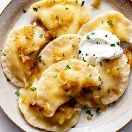

Perogi Recipe
The origin of the pierogi is often under debate but the exact origin is unknown. The dish likely orginated somewhere in Central or Eastern Europe
as the dish was eaten here long before the poltical boreders were put in place. Today the dish is eaten in many Central European Countries but is most
prominantly found in Poland.
Pierogi are boiled dumplings with a variety of different fillings. These fillings include potato, cheese, sauerkraut and even friuts. Peirogi are very easy to
freeze and eat as a last minute meal.

Ingredients
- Dough:
- 4½ cups of all purpose flour
- 2 teaspoons of salt
- 2 cups of sour cream
- 2 eggs
- 2 tablespoons butter (melted)
- 2 tablespoons vegetable oil
- Filling
- 8 baking potatoes (peeled and cubed)
- 1 cup shreded cheddar cheese
- 2 tablespoons processed cheese sauce
- Salt and pepper to taste
Steps
- Stir together the flour and salt in a large bowl. In a seperate bowl wisk sour cream, eggs, egg yolk, butter and oil. Add the wet ingerdients into the dry ingredients until a well bended dough is formed.
- Cover the bowl with a towel and let it sit for 15-20 minutes
- Meanwhile prepare the filling: Place the potatoes in a pot and cover them with water. Boil until tender or for 15 minutes
- Drain and mash the potatoes and add shreded cheese and cheese sauce
- Add onion salt, salt and pepper to the filling.
- Set aside to cool
- Separate pierogi dough into two balls. Roll out one ball at a time on a lightly floured surface until it is thin enough to work with, but not too thin so that it tears, between 1/8- and 1/4-inch thick. Cut into circles using a cookie cutter, pierogi cutter, or a glass, 3 to 4inches in diameter.
- Brush a little water around the edges of the circles, and spoon some filling into the center. Fold the circles over into half-circles, and press to seal the edges with fingers, or use a fork for crimped edges.
- Place perogies on a cookie sheet, and freeze. Once frozen, transfer to freezer storage bags or containers.
- To cook the perogies: Bring a large pot of lightly salted water to a boil. Lower perogies into the water in batches. Cook until they float to the top, about 5 minutes. Do not boil too long, or they will be soggy. Remove with a slotted spoon.
Sources
Cooking NY times
The Almond Eater